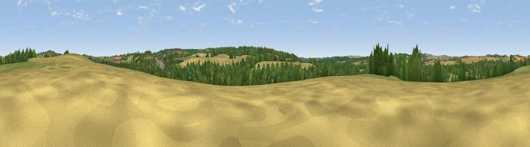

Viewpoint near King's Somborne
#34899 in England · top 39% of its area beats it · near King's Somborne · path 291 mWhere it is
The exact computed spot (SU 35125 30975). Click the marker for map links.
Public access: the nearest public right of way is about 291 m away — the final stretch may cross private land. Computed from Natural England's CRoW access layer and OpenStreetMap rights of way — not the legal definitive map. Always verify locally.
The view, rendered

A 360° render of this exact spot computed from the terrain model, tree cover and land cover — summer colours, afternoon light, calibrated against photographs of famous viewpoints. Real trees, hedges and buildings will differ in detail.
The panorama
Grey silhouette: terrain skyline in each direction (720 bearings, Earth curvature and refraction included). Dashed green: skyline with trees (+15 m) and buildings (+8 m) as obstacles. Blue strip: how far the ground is visible on each bearing.
Where the view opens
Wedge length = distance to the farthest visible ground on that bearing (vegetation-aware). Rings at 10, 25 and 50 km.
What fills the view
41% cropland · 31% grassland · 27% woodland ·
Angular shares of the visible panorama (visual magnitude), not map area. Landscape diversity 0.49 (0–1 Shannon).
Key numbers
More beautiful places nearby
The staircase of upgrades: each row has a higher view potential than everything closer. Driving times are estimates from straight-line distance, calibrated against real road routing — check an actual route before setting out.
| Place | Direction | Drive | Score |
|---|---|---|---|
| Red Hill | E · 2 km | ~6 min | 36.6 |
| Viewpoint near Mottisfont | SSW · 3 km | ~7 min | 37.2 |
| Viewpoint near King's Somborne | ESE · 3 km | ~8 min | 44.5 |
| Viewpoint near Stockbridge | NE · 5 km | ~11 min | 59.6 |
| Viewpoint near King's Somborne | ESE · 5 km | ~11 min | 60.8 |
| Viewpoint near Stockbridge | NE · 6 km | ~12 min | 63.3 |
| Viewpoint near Bulford | NW · 20 km | ~33 min | 70.3 |
| Beacon Hill | ESE · 26 km | ~43 min | 71.7 |
51.07703, -1.49999 · source: screening · position refined by local search. Computed location — check access rights before visiting.